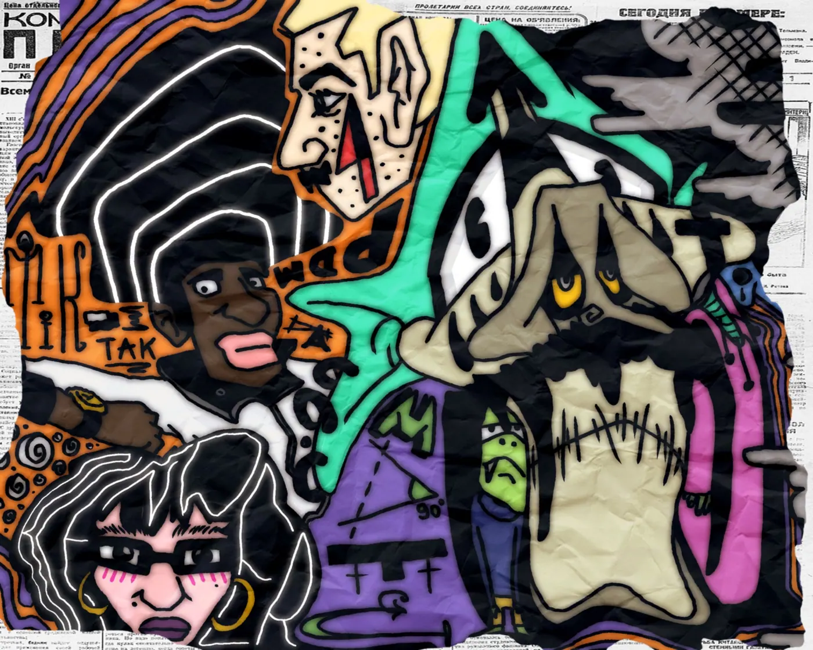
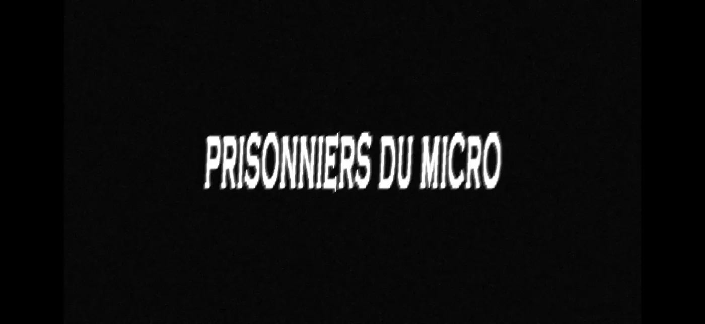

03 /
03 / ☻ ☻ ☻
DOCUMENT NON CLASSÉ // NE PAS RANGER
JEAN
MARTIN
OSSEUX
Cinéma, musique, images et autres accidents heureux. Ceci est un musée qui ne tient pas en place.



✳ ARCHIVES INSTABLES ✳ NOUS NE GARANTISSONS RIEN ✳ GREBIK EST ICI ✳ ARCHIVES INSTABLES ✳ NOUS NE GARANTISSONS RIEN ✳ GREBIK EST ICI ✳
CHOISIS UNE PORTE. OU PAS.
SORTIES VERS LE MONDE EXTÉRIEUR
DJ JEANMA ↗GREBIKOVITCH ↗PRISONNIERS DU MICRO ↗ON SE DÉRÉALISE ↗© Jean Martin Osseux · EXPÉRIENCE 002